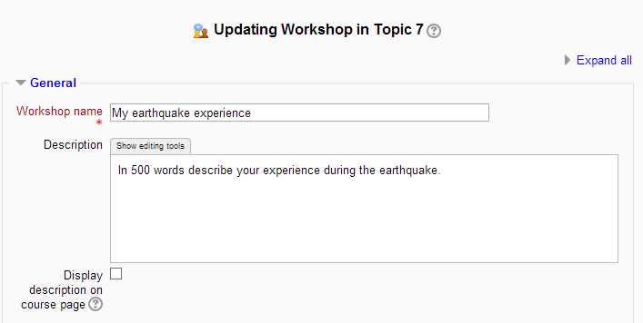
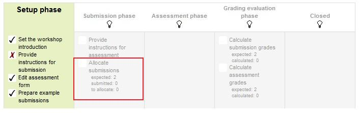

Tutorial membuat Workshop
1. Dengan menghidupkan mode editing, di bagian yang ingin anda tambahkan workshop, klik link "Add an activity or resource" (atau, jika tidak ada, "Tambah kegiatan" menu drop-down) dan memilih workshop. Semua pengaturan dapat diperluas dengan mengklik "Expand all" link atas kanan.
2. Isi form workshop sesuai dengan kriteria yang ada di workshop. Kriteria ini diisikan oleh guru yang akan membuka workshop

3. Mencentang kotak alokasi ini akan memungkinkan mahasiswa untuk menyerahkan setelah batas waktu. Setiap pengajuan yang terlambat tidak dapat diedit oleh mahasiswa - mereka hanya memiliki satu kesempatan untuk menyerahkan. Jika pengajuan yang terlambat diperbolehkan, tidak ada cara untuk secara otomatis mengalokasikan asesor kepada mereka. Guru perlu secara manual mengalokasikan asesor pengiriman akhir ini. (Pengaturan alokasi yang dijelaskan di bawah ini - mereka akan dilakukan setelah pengaturan lokakarya ini telah diselamatkan dengan mengklik link “Allocate Submissions” disorot dengan kotak merah di gambar dashboard. Lihat fase Submission bagian).

4. Siswa dapat melihat petunjuk ini saat workshop dalam tahap penilaian.
5. Setelah workshop telah kita kemudian dapat menetapkan pengaturan lain yang berkaitan dengan pengiriman. Hal ini dilakukan melalui mengklik pada menu yang disorot di bawah ini yang ditemukan ketika Anda klik pada link lokakarya atau setelah mengklik "Save and Display" pada penyelesaian workshop. Untuk mengakses menu cukup klik pada “Allocate Submissions”. Ini akan disorot dalam gambar oleh kotak merah.
6. Di sini, guru dapat secara manual memilih siswa yang meninjau yang bekerja. Mahasiswa dapat meninjau bekerja bahkan jika mereka tidak memiliki diajukan apa-apa sendiri.
Guru diberikan 5 pengaturan yang menentukan bagaimana alokasi acak akan bekerja.
1. Jumlah ulasan: di sini guru mengambil antara 0 dan 30 ulasan baik setiap pengiriman atau per resensi. 1. Itulah guru dapat memilih salah satu set jumlah ulasan setiap pengajuan harus memiliki atau jumlah ulasan setiap siswa telah melaksanakan
2. Mencegah ulasan: Jika guru ingin untuk siswa dari kelompok yang sama untuk pernah meninjau saling bekerja, sebagai kemungkinan itu adalah pekerjaan mereka terlalu dalam penyerahan grup, maka mereka dapat memeriksa kotak ini dan moodle akan memastikan bahwa mereka hanya dialokasikan siswa lain dari kelompok kerja untuk mengakses
3. Menghapus saat ini alokasi: cek pada kotak ini berarti bahwa setiap alokasi manual yang telah ditetapkan dalam menu Manual alokasi akan dihapus
4. Dapat mengakses dengan penyerahan no: memiliki kotak ini dicentang memungkinkan siswa untuk menilai siswa lainnya bekerja tanpa memiliki sudah menyerahkan pekerjaan mereka sendiri.
5. Tambahkan penilaian diri: opsi ini ketika memeriksa memastikan bahwa serta menilai siswa lain kerja mereka harus juga menilai mereka sendiri. Ini adalah pilihan yang baik untuk mengajar siswa bagaimana untuk bersikap objektif untuk pekerjaan mereka sendiri.
Metode perhitungan kelas
Pengaturan ini menentukan bagaimana menghitung nilai untuk penilaian. Saat ini ada hanya satu pilihan-perbandingan dengan penilaian terbaik.
Perbandingan dengan penilaian terbaik mencoba membayangkan apa penilaian yang benar-benar adil hipotetis akan terlihat seperti.
Sebagai contoh, seorang guru menggunakan jumlah kesalahan seperti penilaian strategi untuk rekan-menilai satu tugas. Strategi ini menggunakan beberapa pernyataan dan asesor hanya perlu memeriksa apakah pernyataan tertentu adalah lulus atau gagal. Itu adalah, mereka hanya perlu untuk memilih 'ya' atau 'tidak' untuk setiap kriteria dalam bentuk penilaian. Dalam hal ini, ada tiga asesor, Alice, Bob dan Cindy. Dan bentuk penilaian berisi tiga kriteria. Penulis akan mendapatkan 100% kelas jika semua kriteria berlalu, 75% jika dua kriteria berlalu, 25% jika hanya satu kriteria berlalu dan 0% jika penilai memberikan 'tidak' untuk semua tiga pernyataan. Berikut adalah penilaian mereka memberikan kepada satu pekerjaan tertentu:
Alice: Ya/Ya/tidak
Bob: Ya/Ya/tidak
Cindy: no/ya/yes
Kemudian penilaian terbaik akan:
Ya, ya dan tidak
Kedua, lokakarya akan memberikan nilai 100% penilaian yang terbaik. Berikutnya itu akan mengukur 'jarak' dari penilaian lain untuk penilaian terbaik ini. Semakin jauh jarak, kelas lebih rendah penilaian akan menerima. Dan perbandingan pengaturan, di samping pengaturan evaluasi kelas, penilaian akan menentukan seberapa cepat kelas jatuh ke bawah jika penilaian yang berbeda dari yang terbaik.
Catatan : Perbandingan dengan metode penilaian terbaik akan membandingkantanggapan setiap kriteria individu bukan membandingkan nilai akhir. Dalam contoh di atas, Semua asesor tiga memberikan 75% untuk pengajuan. Namun, hanya Alice danBob akan mendapatkan 100% nilai untuk penilaian mereka, sementara Cindy akanmendapatkan nilai yang lebih rendah. Karena Alice dan Bob setuju dalam tanggapanindividu juga, sedangkan dalam Cindy's penilaian berbeda.